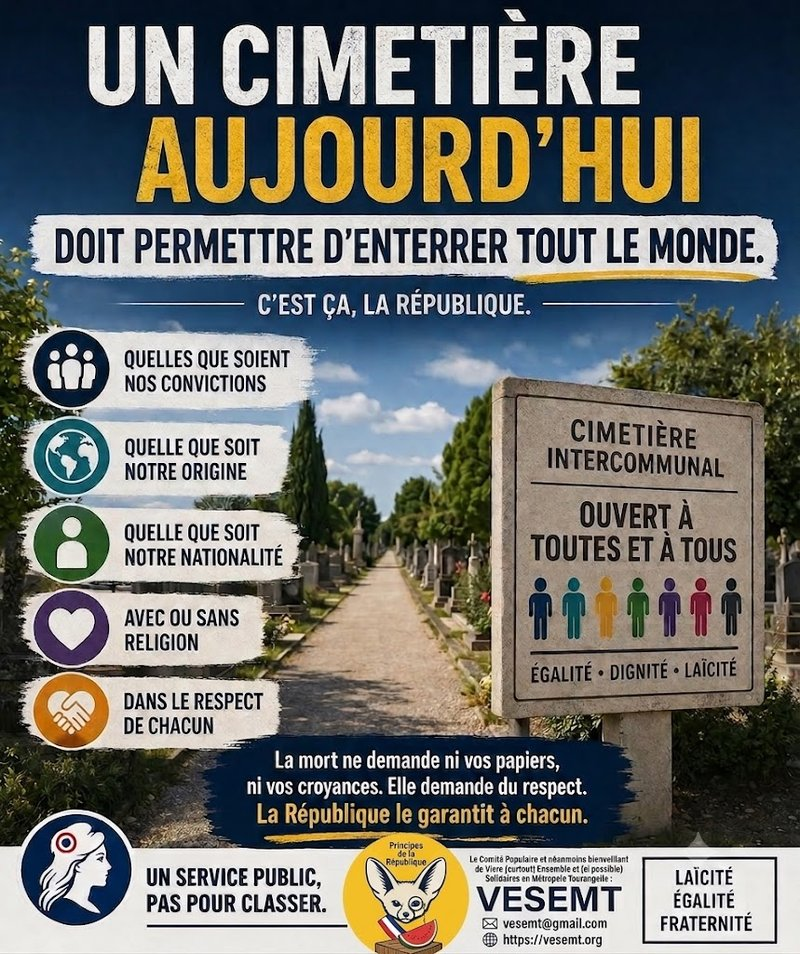

Lors du Conseil municipal de Saint-Pierre-des-Corps du 29 juin, un échange est passé presque inaperçu (question orale en fin de séance – audio disponible sur le site de la ville) :
-
-
-
-
-
-
M. Jeanneau, conseiller municipal d’opposition, interroge le maire : « Cimetière multiconfessionnel : quelles analyses ont été commandées et quel est l’état d’avancement ? »
-
Le maire répond qu’une étude hydrogéologique est en cours, qu’aucune zone humide n’a été identifiée et qu’on en saura plus en octobre 2026.
-
-
-
-
-
Très bien. Le sol est analysé. Mais qui analyse les mots ?
Car il y a quelque chose de profondément révélateur dans cette expression de « cimetière multiconfessionnel ».
-
Le plus surprenant n’est pas qu’elle soit reprise par le maire.
-
Le plus surprenant est qu’elle soit employée sans la moindre réserve par un élu socialiste.
On croyait pourtant que le socialisme républicain parlait de citoyens, de service public, d’égalité et de laïcité. Le voilà qui parle désormais de confessions. Jean Jaurès doit commencer à trouver le silence des cimetières un peu bruyant…
« Multiconfessionnel », cela signifie quoi ?
-
Plusieurs religions : très bien.
-
Mais les personnes sans religion ?
-
Les athées ?
-
Les agnostiques ?
-
Les libres-penseurs ?
-
Les humanistes ?
-
Les indifférents ?
Ils relèvent de quelle confession exactement ? Faudra-t-il créer un carré a-confessionnel pour être cohérent ?
Le mot se veut inclusif. En réalité, il oublie tous ceux qui ne se reconnaissent dans aucune confession. Le seul sujet réellement laïque est que rien ne doit entraver le droit d’être enterré conformément à la loi. Dépasser le problème de mise en terre des musulmans dans notre métropole est l’injustice du moment. Ce nouveau cimetière y répondra pour partie, c’est factuel, mais il rendra de fait l’enterrement dans notre métropole réellement « universel et laïque ». C’est précisément cela qui est politique en répondant à l’un de nos principes républicains fondamentaux : L’ÉGALITÉ.
L’Équipement Public face aux Communautés
Ce futur équipement n’est ni une église, ni une mosquée, ni une synagogue, ni un temple. Ni un quartier où, une fois morts, les religions reposent en paix et en communion nationale.
-
C’est un cimetière intercommunal.
-
Un équipement public, financé par l’argent public.
-
Destiné aux habitants d’un territoire.
-
À tous les habitants.
C’est cela, la République.
La République ne construit pas des équipements pour des communautés. Elle construit des services publics pour les personnes qui vivent dans la cité. Des citoyennes et citoyens qui, au sens républicain, ne sont pas uniquement des possesseurs de la nationalité française.
Vivre en France, c’est appartenir à une même communauté civique, partager des droits, des devoirs et un destin commun sur un territoire, quelles que soient son origine, sa nationalité, sa philosophie ou sa religion.
La mort, elle, ne demande jamais les papiers. Pourquoi les vivants commenceraient-ils par demander la religion ?
La Laïcité n’est pas une Addition
Que chacun puisse être inhumé selon ses convictions ? Évidemment : c’est une liberté fondamentale. Mais respecter les convictions de chacun n’oblige pas à définir un service public par les convictions religieuses. Sinon, demain, que construira-t-on ?
-
Une piscine multiconfessionnelle ?
-
Une médiathèque multiconfessionnelle ?
-
Une mairie multiconfessionnelle ?
-
Une voirie multiconfessionnelle ?
-
On voit bien où mène cette logique.
Le mot juste existe déjà : un cimetière intercommunal ouvert à toutes et à tous.
Cette formule républicaine :
-
Respecte toutes les religions ;
-
Respecte tout autant ceux qui n’en ont aucune ;
-
N’oublie personne ;
-
Rassemble au lieu de distinguer.
C’est cela, la laïcité. Non pas additionner les appartenances religieuses, mais garantir un espace public commun où chacun est accueilli sans avoir à afficher ses convictions. À force de vouloir compter les communautés, on finit par oublier ce qui les dépasse.
La République n’enterre pas des catholiques, des musulmans, des juifs, des athées ou des agnostiques. Elle accueille, dans le respect de chacun, des êtres humains égaux en dignité. Et cela mérite sans doute un mot plus juste que « multiconfessionnel », ce que fait bien mieux l’expression : « ouvert à toutes et à tous ».
À Saint-Pierre-des-Corps, le 04/0/07/2026
Abd-El-Kader AÏT-MOHAMED Président de VESEMT et, Membre du Comité populaire et néanmoins bienveillant de Vivre (surtout) Ensemble et (si possible) Solidaires en Métropole Tourangelle (VESEMT) ;
Commentaires